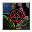
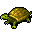
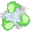

強力なる誘い Forceful Invitation
英語版 CrawlWiki の記事「Forceful Invitation」(0.34 向け、2026-05-28 版)の翻訳です。原文の著者は編集履歴をご覧ください。
|  強力なる誘い | |
|---|---|
| 詠唱の騒音 | 4 |
| 呪文の騒音 | 0 |
| フラグ | モンスター専用(Monster) |

| 蛇穴、蜘蛛の穴ぐら、沼、浅瀬、エルフの大広間、宝物庫、地下墓地のいずれかからモンスターを何体か召喚する。どの分岐から呼ぶかは術者によって異なる。 |
強力なる誘いはモンスター専用の呪文で、次の分岐のうちランダムに選ばれた1つから、1d3体のモンスターを召喚する。どの分岐になるかは術者ごとに固定で、どの分岐も同じ確率で選ばれる。召喚数の上限は3体だ。
| 分岐 | モンスターと、その分岐が選ばれたときの確率[1] | |||||
|---|---|---|---|---|---|---|
| 蛇穴 | S |
57.14% | N |
28.57% | S |
14.29% |
| 蜘蛛の穴ぐら | s |
50.00% | s |
37.50% | s |
12.50% |
| 沼 | n |
57.14% | k |
28.57% | F |
14.29% |
| 浅瀬 | t  カミツキガメ |
50.00% | m |
33.33% | m |
16.67% |
| エルフの大広間 | e |
35.71% | e |
35.71% | e |
28.57% |
| 宝物庫 | v  ポルターガーディアン |
50.00% | p |
33.33% | p |
16.67% |
| 地下墓地 | W |
50.00% | z |
37.50% | p |
12.50% |


強力なる誘いを唱える敵は次のとおり。
変更履歴
- 0.34より前は、浅瀬の組み合わせには水棲の民のセイレーンと水のニンフではなくマンティコアと水棲の民の水占術師が入っていた。また、宝物庫の組み合わせにはポルターガーディアンと鉄縛の保護者ではなく鉄縛の凍心者と甚だしく醜きものが入っていた。
- 0.32より前は、この呪文は鉄縛の凍心者ではなく鉄縛の雷巨人を召喚していた。
- 0.28より前は、強力なる誘いで獣の棲み処とオークの坑道のモンスターも召喚されることがあった。呼ばれるモンスターの顔ぶれも、今ほど危険ではなかった。
- 0.19で、モンスターの一覧が変更された。
- 強力なる誘いは0.14で導入された。
出典
- ↑ mon-cast.cc:4776 (0.28.0)